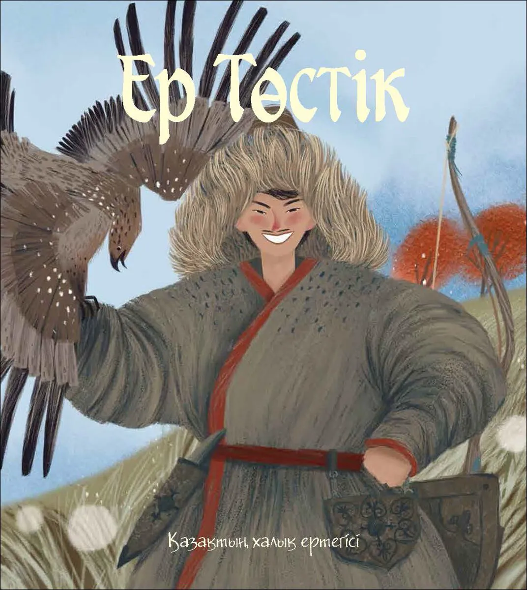

Легенда о Ер Төстік — один из величайших эпосов казахского народа. Она рассказывает о юноше, рождённом под знаком судьбы, которому предстояло пройти долгий путь через чудеса и опасности.
Когда Ер Төстік появился на свет, над степью вспыхнул яркий свет — знак рождения великого героя. С ранних лет он отличался необыкновенной храбростью и мудростью. Он понимал язык животных, слышал дыхание земли и всегда чувствовал, где правда.
Когда его братья исчезли в далёком странствии, Ер Төстік решил отправиться за ними. Он оседлал своего легендарного крылатого скакуна — Тулпара, и вместе они ринулись вперёд, быстрее ветра.
На своём пути Ер Төстік встретил поистине удивительных существ: богатыря, проходившего за шаг сотни вёрст; исполина, способного поднять целую гору; и героя, который одним глотком мог осушить реку. Каждый из них присоединился к нему и стал его верным другом.
Герой прошёл через магические земли, победил чудовищ и злых духов, нашёл своих братьев и вернулся домой победителем. Народ встретил его как истинного батыра — символ силы, верности и благородства.
Легенда об Ер Төстік учит нас, что настоящая сила — в доброте, смелости и верности своему народу.